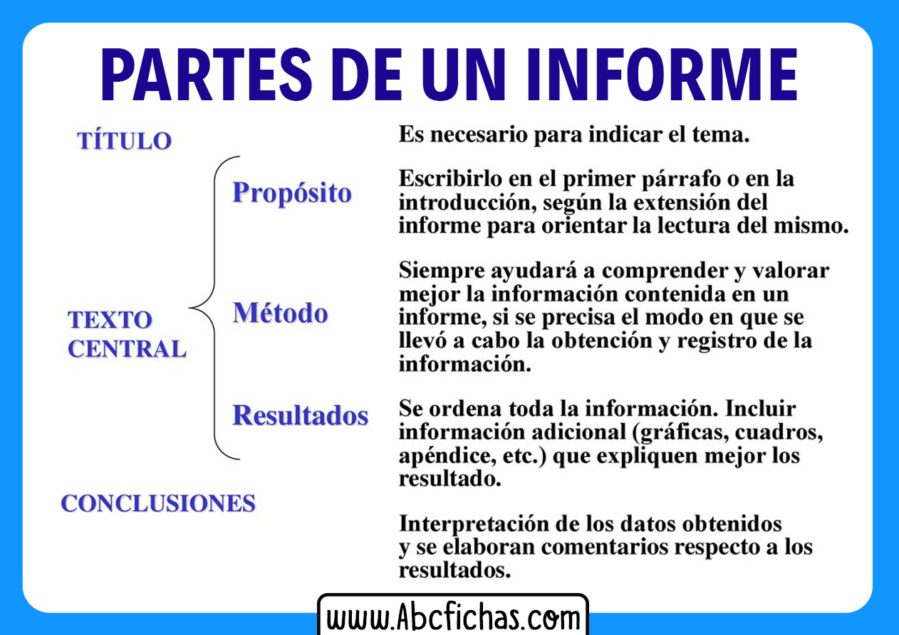

Actividad 2: Informe: El consumo de agua en España.
- Duración:
- 1 sesiones
- Agrupamiento:
- Parejas
Imagen de Freepik
Vamos con la segunda de las 4 actividades del dossier sobre el agua. En este caso se trata de realizar un informe sobre el consumo de agua en nuestro país. El informe deberá tener una estructura como se indica en la imagen a continuación y no deberá exceder dos carillas a mano. Se valorará la inclusión de algún gráfico. Debe contener las siguientes partes:
- 1. TÍTULO DEL INFORME
- 2. CUERPO CENTRAL: Dividido a su vez en tres párrafos:
- Propósito del informe: que pretende el informe
- Método: Aqui se explica como se ha obtenido la información.
- Resultados: Esta es la parte mas extensa donde se desarrolla el informe con toda la información recabada y organizada. Aquí es donde deben también incluirse los gráficos.
- 3. CONCLUSIONES. Para finalizar se deben exponer aqui un resumen con las conclusiones del informe y las recomendaciones en este caso sobre el consumo del agua en nuestro país.
Las fuentes de información puedes obtenerlas de aqui:
1.- Libro de texto: Tema Hidrosfera. Planeta agua.
2.- Proyecto Biosfera: Uso del agua y depuración
3.- Proyecto Cide@d: Uso sostenible del agua
Para finalizar, aquí tienes un esquema de las partes de un informe. Manos a la obra!
